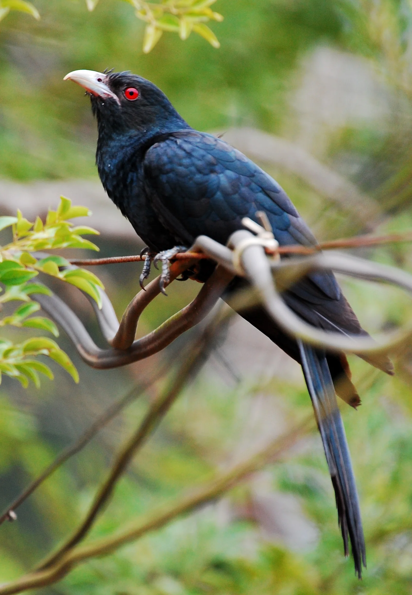

返回名录NO. 011 · 林鸟与城市常客 / 杜鹃科 · Cuculidae
噪鹃
Eudynamys scolopaceus整个华南的夏天，都是它叫起来的
你未必见过它，但一定听过它。三月到八月，珠三角的清晨五点，一声声由低到高、越叫越急的「哦——哦」，正是噪鹃在宣示夏天。它躲在浓密的树冠里，几乎从不露脸。
辨识特征 Identification
- 雄鸟通体黑色，阳光下泛蓝绿金属光泽，眼鲜红色，喙淡绿灰色，尾长。
- 雌鸟上体褐色，密布白色斑点与横斑，下体白色带粗黑横纹，外观与雄鸟截然不同，常被误认成另一种鸟。
- 体型体型似乌鸦，尾长而宽，飞行时轮廓像一只小型的鸦。
- 喙眼喙粗壮、略下弯；雄鸟的红眼在树荫中十分醒目。
习性 Behaviour
典型的巢寄生鸟类：雌鸟把卵产在黑领椋鸟、八哥、家鸦等宿主的巢中，由宿主代孵代育。食性以果实为主，尤其偏爱榕树果，常成群在果树上取食。性隐蔽，多在高大树冠层活动，鸣叫时张口仰头、全身用力。
鸣声 Voice
野外鸣声录音
点击波形可跳转 · 建议佩戴耳机
0:00 / 0:55
录音 Manoj Karingamadathil · 许可 CC BY-SA 4.0
· 原始文件
「ko—el」两音节，第一音短而低，第二音高而长，重复数十次，音调与节奏逐渐加快，越叫越亢奋。清晨与傍晚最盛，夜间也常在路灯下鸣叫——是不少珠海居民的「夏季失眠元凶」。
在珠海去哪里找 Where to Watch
- 野狸岛高树
- 香山湖公园
- 板障山
- 各小区的大榕树
观察提示
听到「哦—哦」的上升二音，就是它。想看它：趁鸣叫时循声仰视高树冠层，找黑色鸟影；雄鸟红眼在逆光下会反出亮点。